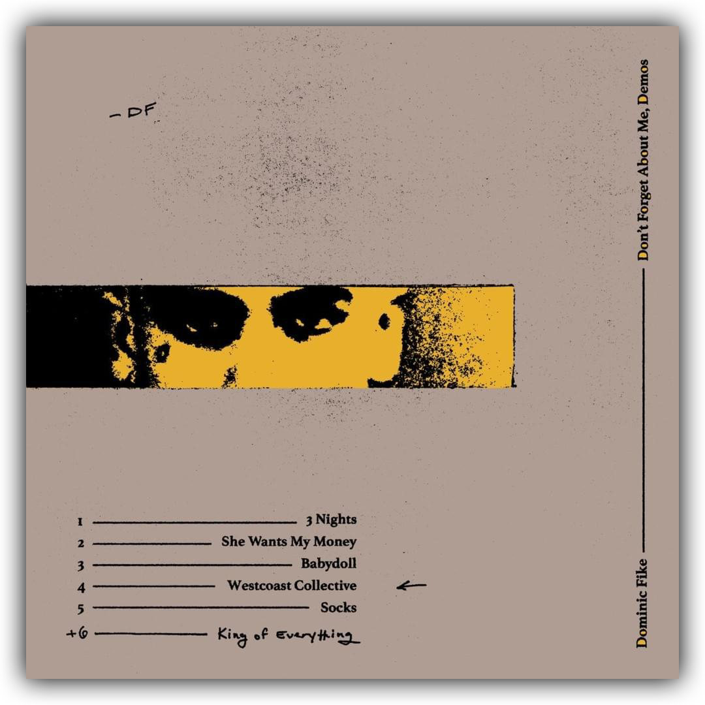
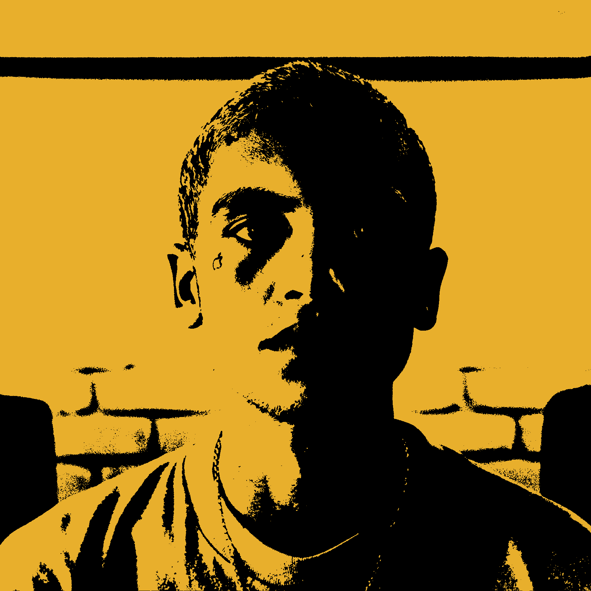

3 Nights
She Wants My Money
Babydoll
Westcoast Collective
Socks
King of Everything
Falling Asleep
Batshit

Dominic Fike is an alternative rap
singer-song writer from Naples, Florida.
"Don't Forget About Me, Demos" was
released in 2018, then re-released with
two additional songs. This is Fike's first
album.